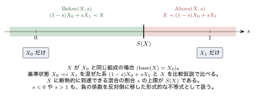

6 断熱到達性とエントロピー
エントロピーは、状態に対する測定の目盛りである。 長さの測定 (定義 2 の外延的構造) と同じ形で組み立てる。
比較：棒では、並べてどちらの他端が出るかを見た。状態では、\(X\) から \(Y\) へ断熱操作で移せるかを試す。移せるとき \(X \prec Y\) と書く (断熱到達性、定義 47)。
連結：棒では、端と端でつないだ。状態では、二つの系を並べて一つの複合系 \(X + Y\) とする。
目盛り：棒では、比較を \(\le \) に、連結を \(+\) に写す長さ \(\ell \) を作った (定義 4)。状態では、断熱到達性を \(\le \) に、複合を \(+\) に写すエントロピー \(S\) を作る (定理 86, 88)。
長さとの違いは三つある。 比較できるのは組成の等しい状態どうしだけである。 連結のほかに、量を \(t\) 倍した系 \(tX\) を作る手順がある。 目盛りの一意性は、定数倍ではなく、単位と成分ごとの基準値を選ぶ自由度を残す (定理 90)。
この章の公理と証明の筋道は Lieb–Yngvason [ 1 ] の第 2 章に従う。 Lieb–Yngvason は断熱到達性を原始概念として公理を置く。 ここでは断熱到達性を断熱操作の存在として定義し、公理のうち A1–A4 を断熱操作についての前提から導く。 抽象的な構成の全体は Lieb–Yngvason を参照されたい。 教科書としての解説は Thess [ 8 ] 、日本語では田崎 [ 9 ] と佐々 [ 10 ] がある。
6.1 断熱操作から断熱到達性へ
断熱操作は続けて行える (経験則 46 と同じ)。
別の系 \(Z\) を脇に置いたまま、\(X\) に断熱操作を行える。重りの動きは変わらない。
量を \(t\) 倍した系にも同じ断熱操作を行え、重りの降下量は \(t\) 倍になる。
断熱操作で組成は変わらない。
組成が変わらないことは、物質が出入りせず、化学反応も起きないことを表す。 化学反応は扱わない。
A1 反射律：\(X \prec X\)。
A2 推移律：\(X \prec Y\) かつ \(Y \prec Z\) なら \(X \prec Z\)。
A3 結合との整合性：\(X \prec Y\) なら \(X + Z \prec Y + Z\)。
A4 スケーリング：\(X \prec Y\) なら \(tX \prec tY\)。
順に、何もしない断熱操作、続けて行う断熱操作、\(Z\) を脇に置いた断熱操作、量を \(t\) 倍した系への断熱操作をとる。
A6 安定性：すべての \(n\) で \(X + \frac{1}{n+1} Z_0 \prec Y + \frac{1}{n+1} Z_1\) なら \(X \prec Y\)。
CH 比較仮説：\(\mathrm{comp}\, X = \mathrm{comp}\, Y\) なら \(X \prec Y\) または \(Y \prec X\)。
CH は連結性 (経験則 48) を、組成の等しい複合系どうしに広げたものである。 組成が違えば、断熱操作では組成が変わらないので、どちら向きにも移れない。 CH は「どちらか一方向には必ず行ける」という主張であり、両方向に行けるとは言っていない。 例えば容器に入った気体の二つの状態 \(X, Y\) を考える。 かき混ぜると、体積を保ったままエネルギーを上げられる。 ピストンをゆっくり動かすと、体積を変えられる。 この二つを組み合わせれば、\(X\) から \(Y\) か \(Y\) から \(X\) の少なくとも一方へは移れる。 複合系では、例えば \(1\, \mathrm{kg}\) の熱い水と \(1\, \mathrm{kg}\) の冷たい水の組 \(X\) と、\(2\, \mathrm{kg}\) のぬるい水 \(Y\) を比べる。 混ぜれば \(X\) から \(Y\) に移れるが、\(Y\) から \(X\) には移れない。 Lieb–Yngvason は単純系の CH を別の公理から導くが、ここでは仮定として置く。 基準状態の混合と \(X\) を比べるために使う (定理 86)。 A1–A4 とこの二つを合わせたものが Lieb–Yngvason の公理系であり、以下の補題と定理はこの六つだけを使う。
6.2 複合系の内部エネルギー
第一法則の章では、一つの系の平衡状態の上に内部エネルギーを作った。 ここでは状態の空間 \(\mathcal{S}\) の上に作り、複合とスケーリングに対してどう振る舞うかを示す。 仕事 \(W(p)\) は定義 49 と同じく降下の記録から計算する。
\(\mathcal{S}\) の同じ始状態と終状態を結ぶ二つの断熱操作の仕事は等しい。
成分ごとに、単位質量の基準状態を一つ選ぶ。 組成 \(k\) に対し、各成分の基準状態を \(k\) の割合で並べた状態を \(\mathrm{ref}(k)\) と書く。
\(\mathrm{ref}\) は線形で、\(\mathrm{comp}(\mathrm{ref}(k)) = k\) を満たす。 Lean では、この性質を持つ線形写像として与える。
\(\mathrm{ref}(\mathrm{comp}\, X) \to X\) の断熱操作 \(p\) があれば \(U(X) := W(p)\)、なければ \(X \to \mathrm{ref}(\mathrm{comp}\, X)\) の断熱操作 \(q\) をとって \(U(X) := -W(q)\) とする。
\(X\) と \(\mathrm{ref}(\mathrm{comp}\, X)\) は組成が等しいので、CH からどちらかの断熱操作は存在する。
任意の断熱操作 \(p : X \to Y\) について \(U(Y) - U(X) = W(p)\)。 基準状態では \(U(\mathrm{ref}(k)) = 0\)。
断熱操作で組成は変わらないので、\(X\) と \(Y\) の基準状態は同じである。 基準状態と \(X\)、基準状態と \(Y\) をどちら向きに結ぶかで分け、続けて行った断熱操作に経路独立性を使う。
\(U(X + Y) = U(X) + U(Y)\)、\(U(tX) = t\, U(X)\)。
脇に \(Z\) を置いた断熱操作は仕事を変えないので、組成の等しい \(X, Y\) について \(U(X + Z) - U(Y + Z) = U(X) - U(Y)\)。 \(X\) を \(\mathrm{ref}(\mathrm{comp}\, X)\) に、\(Y\) を \(\mathrm{ref}(\mathrm{comp}\, Y)\) に順に置き換え、\(\mathrm{ref}\) の線形性と \(U(\mathrm{ref}(k)) = 0\) を使う。 スケーリングでは、\(t\) 倍した系への断熱操作の仕事が \(t\) 倍になることを使う。
6.3 相殺則
\(0 \le t \le 1\) なら \(X = tX + (1-t)X\)。
加群の分配律による。
\(X + Z \prec Y + Z\) なら \(X \prec Y\)。
\(e = 1/(n+1)\) とおくと、A4 から \(eX + eZ \prec eY + eZ\)。 \(eX\) を一つずつ \(eY\) に置き換える帰納法で、\(j \cdot eX + eZ \prec j \cdot eY + eZ\) が任意の \(j\) で成り立つ。 \(j = n+1\) とすれば \(X + eZ \prec Y + eZ\) となり、A6 から \(X \prec Y\)。
6.4 基準状態と形式的な不等式
エントロピーの目盛りを作るには、元に戻せない変化の例が一つ要る。 すべての状態が断熱的に行き来できるなら、断熱到達性は何も区別せず、エントロピーは定数になる。
組成の等しい状態 \(X_0, X_1\) で、\(X_0 \prec X_1\) かつ \(X_1 \not\prec X_0\) を満たすものがある。
Joule の実験 (図 4.1) が例である。 重りを下げて水をかき混ぜれば水は温まるが、水を冷やして重りを持ち上げる断熱操作は見つかっていない。 これは Kelvin–Planck の形の第二法則にあたる (第 6.8 節)。
\(\alpha , \beta \in \mathbb {R}\) に対し、\(R(P, Q, \alpha , \beta )\) を次で定める。 \(a - a' = \alpha \)、\(b - b' = \beta \) を満たす \(a, b, a', b' \ge 0\) が存在して \(P + Z(a, b) \prec Q + Z(a', b')\)。
形式的には「\(P + \alpha X_0 + \beta X_1 \prec Q\)」と読む。 この形にすると、元の議論の \(X_0 \prec X \prec X_1\) という範囲の制限が要らなくなる。
\(R(P, Q, \alpha , \beta )\) なら、\(a - a' = \alpha \)、\(b - b' = \beta \) を満たす任意の \(a, b, a', b' \ge 0\) で \(P + Z(a,b) \prec Q + Z(a',b')\)。
与えられた表示 \((a_0, b_0, a_0', b_0')\) の両辺に \(Z(a', b')\) を足し、\(Z(a_0', b_0')\) を相殺する。
\(R\) は係数を足し合わせる形で推移的であり、複合とスケーリングで保たれる。 \(R(P, Q, 0, 0)\) は \(P \prec Q\) と同値である。
A2, A3, A4 を表示に適用する。 \(R(P,Q,0,0) \Rightarrow P \prec Q\) には表示によらないことを使う。
\(R(P, P, \gamma , -\gamma )\) は \(\gamma \ge 0\) と同値である。
\(\gamma \ge 0\) なら A4 から \(\gamma X_0 \prec \gamma X_1\)。 \(\gamma {\lt} 0\) なら相殺則で \(P\) を除いて \(|\gamma | X_1 \prec |\gamma | X_0\) となり、\(1/|\gamma |\) 倍して \(X_1 \prec X_0\) が出て矛盾する。
\(\varepsilon _n = 1/(n+1)\) とする。 すべての \(n\) で \(R(P, Q, \alpha + \varepsilon _n, \beta - \varepsilon _n)\) なら \(R(P, Q, \alpha , \beta )\)。 符号を入れ替えた形も成り立つ。
固定した表示に \(\varepsilon _n X_0\) と \(\varepsilon _n X_1\) を足した表示をとり、A6 を適用する。
6.5 エントロピーの構成

\(\mathrm{Below}(X, s) := R(\mathrm{base}(X), X, -s, s)\)、\(\mathrm{Above}(X, s) := R(X, \mathrm{base}(X), s, -s)\) とおく。 エントロピーを \(S(X) := \sup \{ s : \mathrm{Below}(X, s) \} \) と定義する。
\(\mathrm{Below}(X, s)\) かつ \(\mathrm{Above}(X, s')\) なら \(s \le s'\)。 また \(\mathrm{Below}(X, s)\) は \(s\) について下に閉じている。
推移させると \(R(\mathrm{base}(X), \mathrm{base}(X), s'-s, s-s')\) を得るので、基準状態の順序から \(s' - s \ge 0\)。
任意の \(s\) で \(\mathrm{Below}(X, s)\) または \(\mathrm{Above}(X, s)\)。
表示 \(\mathrm{base}(X) + Z(a, b)\) と \(X + Z(a', b')\) の組成は等しいので、CH を適用する。
\(\mathrm{Below}(X, s)\) を満たす \(s\) も、\(\mathrm{Above}(X, s)\) を満たす \(s\) も存在する。
\(\mathrm{Above}\) を満たす \(s\) がなければ、すべての \(s\) で \(\mathrm{Below}(X, s)\) が成り立つ。 \(s = k\) (\(k = n+1\)) とすると \(\mathrm{base}(X) + k X_1 \prec X + k X_0\)。 \(1/k\) 倍すると \(X_1 + \frac{1}{k} \mathrm{base}(X) \prec X_0 + \frac{1}{k} X\) となり、A6 から \(X_1 \prec X_0\) が出て矛盾する。 もう一方も同様である。
\(\mathrm{Below}(X, S(X))\) かつ \(\mathrm{Above}(X, S(X))\)。 つまり形式的に \(X \sim \mathrm{base}(X) - S(X) X_0 + S(X) X_1\)。
\(S(X) - \varepsilon _n\) では \(\mathrm{Below}\) が成り立つ (上限の性質と下に閉じていること)。 \(S(X) + \varepsilon _n\) では \(\mathrm{Below}\) が成り立たないので、どちらか一方の補題から \(\mathrm{Above}\) が成り立つ。 どちらも安定性で \(\varepsilon _n \to 0\) とする。
\(\mathrm{Below}(X, s)\) かつ \(\mathrm{Above}(X, s)\) なら \(S(X) = s\)。
上限の定義から \(s \le S(X)\)、下と上の比較から \(S(X) \le s\)。
6.6 エントロピーの測定
\(S(X)\) は上限として定義した。 Lean では実数の上限 \(\sup \) を使うので、この定義は古典論理に頼っており、数を計算する手続きを直接は与えない。 しかし、断熱到達性の実験を繰り返せば \(S(X)\) は任意の精度で求まる。 長さを、単位の棒の分数個と比べて測るのと同じである。
一回の実験は次のとおり。 \(X\) と同じ組成の基準状態 \(\mathrm{base}(X)\) から \(X_0\) を量 \(s\) だけ \(X_1\) に置き換えた系を用意し、それを断熱操作で \(X\) に移せるかを試す。 移せれば \(\mathrm{Below}(X, s)\) が成り立つ。 移せなければ、CH により逆向きに移せる。つまり \(\mathrm{Above}(X, s)\) が成り立つ。
\(\mathrm{Below}(X, a)\) と \(\mathrm{Above}(X, b)\) から始め、区間の中点 \(m\) で実験して、移せれば下端を、移せなければ上端を \(m\) に動かす。 \(n\) 回の実験の後の区間 \([a_n, b_n]\) は \(a_n \le S(X) \le b_n\) かつ \(b_n - a_n = (b - a)/2^n\) を満たす。
\(\mathrm{Below}(X, a_n)\) と \(\mathrm{Above}(X, b_n)\) が各段で保たれることを帰納法で示す。 \(\mathrm{Below}(X, s)\) なら \(s \le S(X)\)、\(\mathrm{Above}(X, s)\) なら \(S(X) \le s\) である。
この意味で、エントロピーは実験を問い合わせ先とする計算で求まる。 ただし一回の実験は理想化されている。 断熱操作が見つからないことは、存在しないことの証明にならない。 実際には両向きの操作を試し、どちらかが見つかるまで続ける。 CH はどちらかが必ず存在することを保証するだけで、見つけ方は与えない。 実験室での実際の測定は第 9 章で述べる。
6.7 エントロピー原理
\(\mathrm{comp}\, X = \mathrm{comp}\, Y\) なら \(X \prec Y \iff S(X) \le S(Y)\)。
(\(\Rightarrow \)) \(\mathrm{Below}(X, S(X))\) と \(X \prec Y\) を推移させて \(\mathrm{Below}(Y, S(X))\)。 \(\mathrm{Above}(Y, S(Y))\) と比べて \(S(X) \le S(Y)\)。 (\(\Leftarrow \)) \(X \prec \) 基準混合 \((S(X))\) \(\prec \) 基準混合 \((S(Y))\) \(\prec Y\) を \(R\) で推移させると \(R(X, Y, 0, 0)\)、すなわち \(X \prec Y\)。
\(\mathrm{comp}\, X = \mathrm{comp}\, Y\) なら \(X \mathrel {\prec \! \prec }Y \iff S(X) {\lt} S(Y)\)。
エントロピー原理を両方向に使う。
\(S(X + Y) = S(X) + S(Y)\)、\(S(tX) = t S(X)\)。つまり \(S\) は示量的である。
\(X\) と \(Y\) の \(\mathrm{Below}\) と \(\mathrm{Above}\) を足し合わせる (またはスケーリングする) と、\(X + Y\) (または \(tX\)) について値 \(S(X) + S(Y)\) (または \(tS(X)\)) の \(\mathrm{Below}\) と \(\mathrm{Above}\) が得られる。 特徴づけの補題を適用する。
\(S(X_0) = 0\)、\(S(X_1) = 1\)。
反射律から直接 \(\mathrm{Below}\) と \(\mathrm{Above}\) が成り立つ。
\(S' : \mathcal{S} \to \mathbb {R}\) が示量的で、組成の等しい状態について \(X \prec Y \iff S'(X) \le S'(Y)\) を満たすとする。 このとき \(a := S'(X_1) - S'(X_0) {\gt} 0\) であり、\(S'(X) = a S(X) + S'(\mathrm{base}(X))\)。
\(X + Z(a', b') \sim \mathrm{base}(X) + Z(a, b)\) の両辺に \(S'\) を適用し、示量性で展開する。
6.8 第二法則
第二法則には歴史的にいくつもの言い方がある。 この blueprint での位置づけは次のとおり。
エントロピー原理 (定理 86)：組成の等しい状態について、断熱的に移れるのはエントロピーが減らないときに限る。この blueprint ではこれを第二法則の中心とみなす。Lieb–Yngvason [ 1 ] と同じ立場である。
Kelvin–Planck：熱を全部仕事に変える循環過程はない。ここでは、水を冷やして重りを持ち上げる断熱操作はないという形で、経験則 72 として置いた。
Clausius：熱は低温から高温へ自然には流れない。温度を定義した後で定理 106 として導く。
Carathéodory：どの状態のどんな近くにも、その状態から断熱的に到達できない状態がある。この形はここの公理からは出ない (下の注意と定理 92)。公理から出るのは、次の定理の弱い形である。
任意の状態 \(X\) と \(t {\gt} 0\) について、\(X + tX_1 \not\prec X + tX_0\)。
両辺の組成は等しく、エントロピーは \(S(X) + t\) と \(S(X)\) である。 エントロピー原理から、移れるなら \(S(X) + t \le S(X)\) となり矛盾する。
\(t\) はいくらでも小さくとれるので、元に戻せない変化 \(X_0 \to X_1\) は、どんなに少量でも、どんな系 \(X\) を添えても元に戻せない。
これは Carathéodory の原理そのものではない。 Carathéodory の原理は、始状態 \(Y\) を固定して、\(Y\) の任意の近傍に \(Y\) から到達できない状態があることを主張する。 上の定理では始状態 \(X + tX_1\) が \(t\) とともに動く。 また、ここの状態の空間 \(\mathcal{S}\) には近傍を決める位相を入れていない。 実際、定理 92 のモデルでは、\(X_0 = (1, 0)\) から質量の等しいすべての状態に断熱的に移れる。 このモデルは公理をすべて満たすので、近傍の形の原理は公理から出ない。 この形を得るには、状態の空間の位相と、考える状態が内点であることと、その点からエントロピーを下げる向きの状態が近くにあることを、別に仮定する必要がある [ 1 ] 。
経験的な入力は、A1–A4 を導いた断熱操作の法則、A6 と比較仮説、元に戻せない断熱操作の存在の三つである。 エントロピー原理は、これらから導いた定理である。 元に戻せない断熱操作の存在を除くと、エントロピーは定数になり、エントロピー原理は何も主張しなくなる。
6.9 無矛盾性
成分が一つで、\(\mathcal{S} = \mathbb {R}_{\ge 0}\times \mathbb {R}_{\ge 0}\)、\(X \prec Y :\iff (X_1 = Y_1\) かつ \(X_2 \le Y_2)\)、組成 \(X_1\) のモデルは公理をすべて満たし、\(X_0 = (1, 0) \mathrel {\prec \! \prec }X_1 = (1, 1)\)。 このモデルで構成したエントロピーは第二成分に一致する。 したがって公理系は矛盾しない。 さらに、\(X_0\) からは質量の等しいすべての状態に断熱的に移れる。
A6 は \(\varepsilon _n \to 0\) の極限で示す。質量の等式は \(n = 0, 1\) の二つの式から出る。 エントロピーの一致は一意性の定理による。